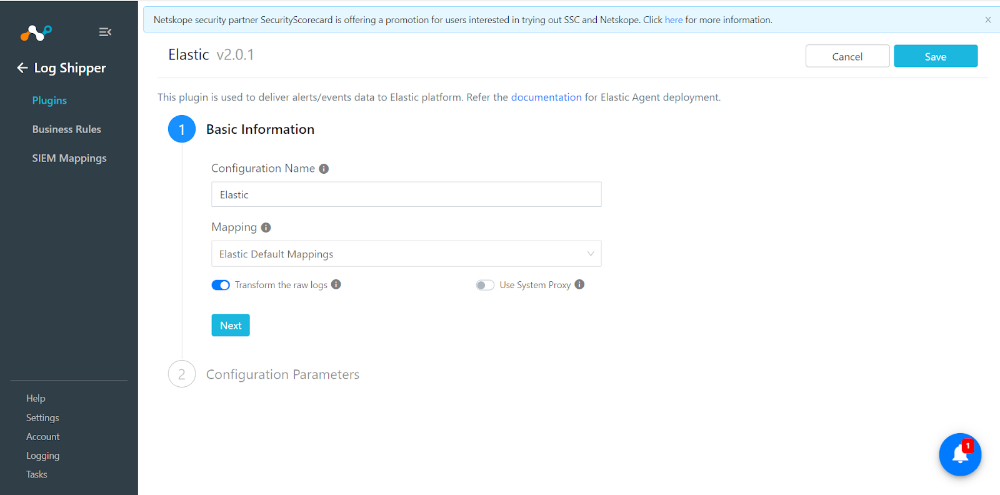
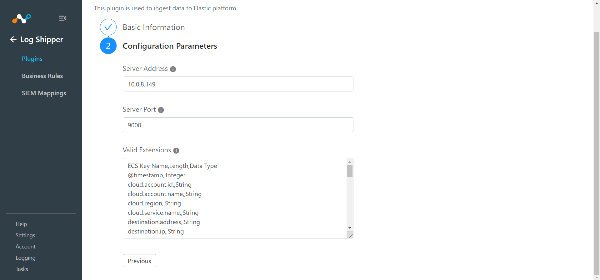
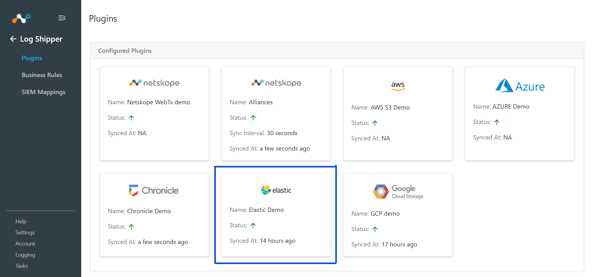
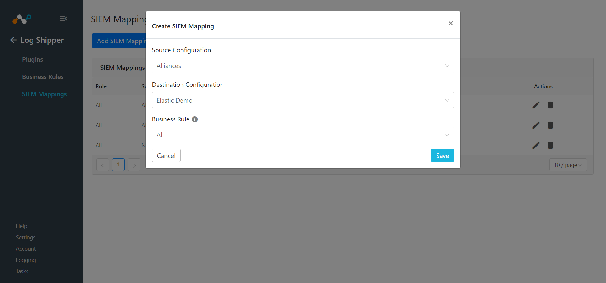
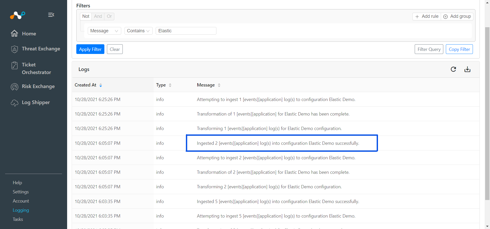
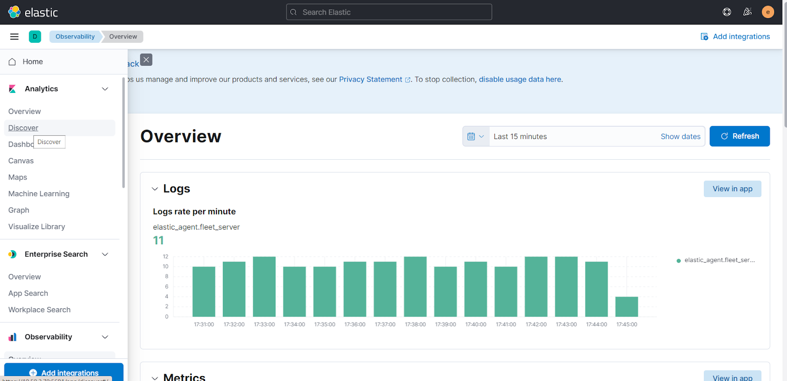
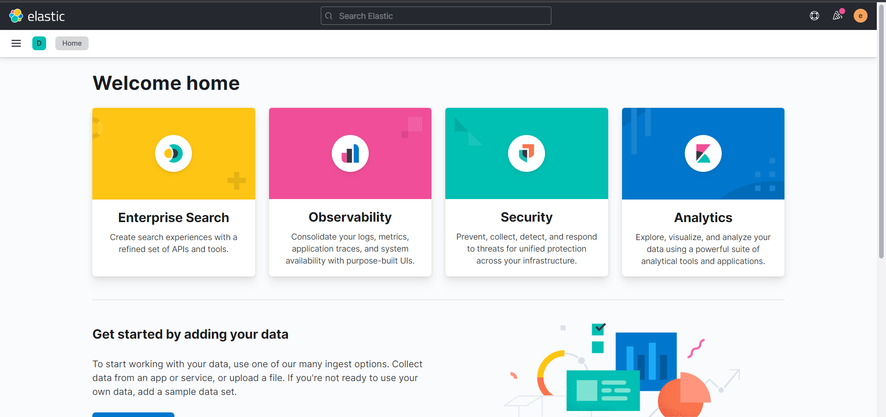
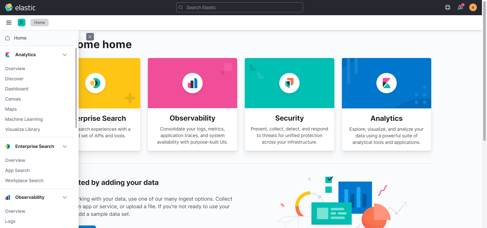
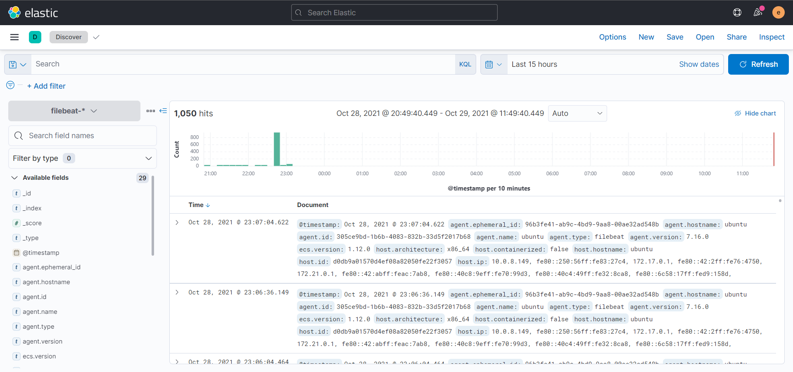

Elastic Plugin for Log Shipper
This document explains how to configure your Elastic integration with the Log Shipper module of the Netskope Cloud Exchange platform. This integration allows pushing alerts and events from Netskope to the Elastic platform.
To complete this configuration, you need:
A Netskope tenant (or multiple, for example, production and development/test instances)
A Netskope Cloud Exchange tenant with the Log Shipper module already configured.
Your Filebeat TCP Server address and port.
Configure Filebeat to listen on a specific port.
Configure the Elastic plugin.
Configure Log Shipper Business Rules for Elastic.
Configure Log Shipper SIEM Mappings for Elastic.
Validate the Elastic plugin.
Click play to watch a video.
Install and configure elastic search.
(Reference: https://www.elastic.co/guide/en/elasticsearch/reference/7.15/install-elasticsearch.html)
Install and configure kibana to view data.
(Reference: https://www.elastic.co/guide/en/kibana/7.15/install.html)
Install and configure filebeat to listen on a specific port.
(Reference: https://www.elastic.co/guide/en/beats/filebeat/7.15/filebeat-installation-configuration.html)
Go to Settings > Plugins.
Select the Elastic box to open the plugin creation dialog.
Enter a Configuration Name.
Select a valid Mapping (Default Mappings for all plugins are available). Click Next
 Enter your Server Address and Server Port.
 Click Save.

Go to Log Shipper > Business Rules.

Click Create New Rule.

Enter a Rule Name and select the filters to use.
Click Save.

Go to Log Shipper > SIEM Mappings and click Add SIEM Mapping.
Select a Source Configuration, Business Rule, and Destination Configuration.
 Click Save.
To validate the plugin workflow, you can check from Netskope Cloud Exchange and from Kibana.
To validate from Netskope Cloud Exchange, go to Logging.
|  |
To validate from the Kibana.
Open your Kibana instance to view data.
 Log in.
 Click Discover from the left panel.
 Click logs-*.

Select filebeat-* from the dropdown.

Set a time range and click Refresh to see data.
